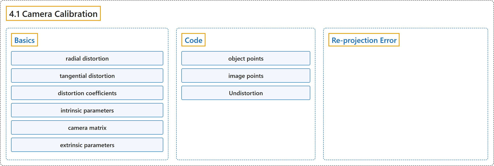

4.1 Camera Calibration
Classification

Glossary
| Term | Definition | 中文翻译 | Source |
|---|---|---|---|
| 4.1 Camera Calibration 相机标定 |
(context) "Let's find how good is our camera." | （语境）让我们看看我们的相机有多好。 | OpenCV team, n.d.-b, "Camera Calibration and 3D Reconstruction", item 1 |
| Basics 基础 |
(context) "Two major kinds of distortion are radial distortion and tangential distortion." | （语境）两种主要的畸变是径向畸变和切向畸变。 | OpenCV team, n.d.-a, "Basics", para. 1 |
| radial distortion 径向畸变 |
"Radial distortion causes straight lines to appear curved." | 径向畸变使直线看起来是弯曲的。 | OpenCV team, n.d.-a, "Basics", para. 2 |
| tangential distortion 切向畸变 |
"Similarly, tangential distortion occurs because the image-taking lense is not aligned perfectly parallel to the imaging plane." | 类似地，切向畸变的产生是因为成像镜头没有与成像平面完全平行地对齐。 | OpenCV team, n.d.-a, "Basics", para. 5 |
| distortion coefficients 畸变系数 |
(context) "In short, we need to find five parameters, known as distortion coefficients given by:" | （语境）简而言之，需要求出五个参数，称为畸变系数，由下式给出： | OpenCV team, n.d.-a, "Basics", para. 6 |
| intrinsic parameters 内参 |
"Intrinsic parameters are specific to a camera." | 内参是某台相机特有的。 | OpenCV team, n.d.-a, "Basics", para. 7 |
| camera matrix 相机矩阵 |
"The focal length and optical centers can be used to create a camera matrix, which can be used to remove distortion due to the lenses of a specific camera." | 焦距和光学中心可以用来构造相机矩阵，它可用于去除特定相机镜头造成的畸变。 | OpenCV team, n.d.-a, "Basics", para. 7 |
| extrinsic parameters 外参 |
"Extrinsic parameters corresponds to rotation and translation vectors which translates a coordinates of a 3D point to a coordinate system." | 外参对应于把三维点的坐标转换到某个坐标系的旋转向量和平移向量。 | OpenCV team, n.d.-a, "Basics", para. 8 |
| Code 代码 |
(No definition) | （无定义） | OpenCV team, n.d.-a, "Code" |
| object points 物点 |
"3D points are called object points and 2D image points are called image points." | 三维点称为物点，二维图像点称为像点。 | OpenCV team, n.d.-a, "Code", para. 3 |
| image points 像点 |
"3D points are called object points and 2D image points are called image points." | 三维点称为物点，二维图像点称为像点。 | OpenCV team, n.d.-a, "Code", para. 3 |
| Undistortion 去畸变 |
(context) "Now, we can take an image and undistort it." | （语境）现在可以取一幅图像并对它去畸变。 | OpenCV team, n.d.-a, "Undistortion", para. 1 |
| remapping 重映射 |
"First, find a mapping function from the distorted image to the undistorted image. Then use the remap function." | 首先，求出从畸变图像到去畸变图像的映射函数。然后使用 remap 函数。 | OpenCV team, n.d.-a, "2. Using remapping", para. 1 |
| Re-projection Error 重投影误差 |
"Re-projection error gives a good estimation of just how exact the found parameters are." | 重投影误差很好地估计了所求参数究竟有多准确。 | OpenCV team, n.d.-a, "Re-projection Error", para. 1 |
References
OpenCV team. (n.d.-a). Camera Calibration. OpenCV-Python Tutorials (Version 4.13.0). Retrieved October 31, 2026, from https://docs.opencv.org/4.x/dc/dbb/tutorial_py_calibration.html
OpenCV team. (n.d.-b). Camera Calibration and 3D Reconstruction. OpenCV-Python Tutorials (Version 4.13.0). Retrieved October 31, 2026, from https://docs.opencv.org/4.x/d9/db7/tutorial_py_table_of_contents_calib3d.html